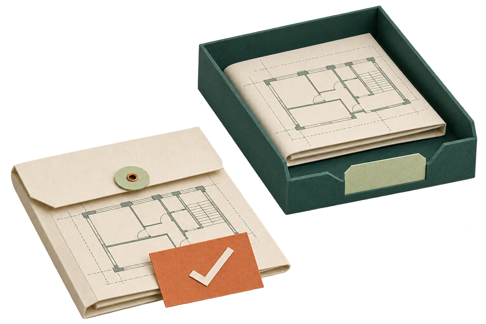
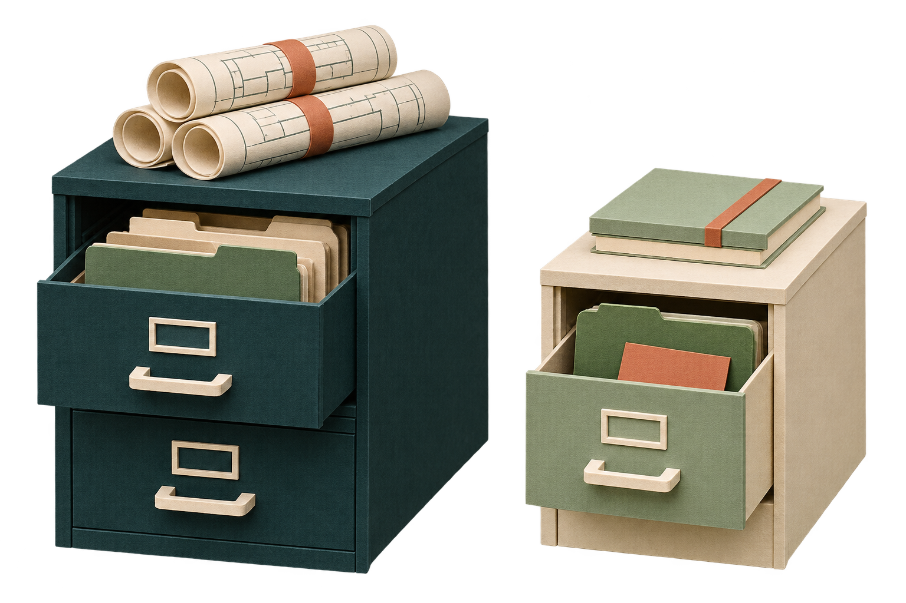
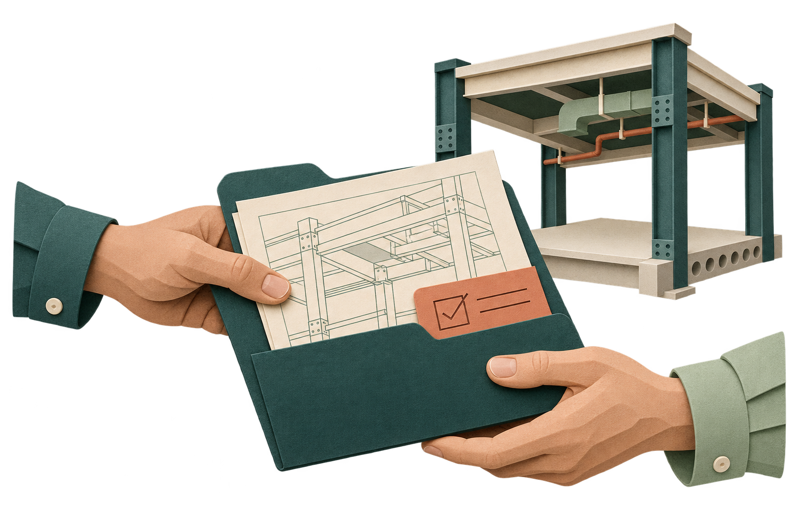

01
Who gets to keep the project record?
Teams need their records long after a project closes.
02

The handoff is where context gets lost
The receiving team needs to know which version it can use.
03
Each organization keeps control of its data
The project agrees who can issue, accept, and keep each release.

04
Connect the systems teams already use
Use OCI as the common way to exchange issued versions.
-
Existing CDE
Review and issue
- ↔
-
OCI exchange
Exact version and approval record
- ↔
-
Owner’s systems
Retain the release and use the data
05
Prove it on one model
Show that the project can control what gets issued and recover an earlier release.
-
Draft
The author submits the model.
-
First release
The designated people authorize and accept it.
-
Next revision
The owner can still verify the first approval.
Block unauthorized releases in the CDE and registry API.
06
Bring one real handoff
Two organizations, one model, and the project’s approval rules.
